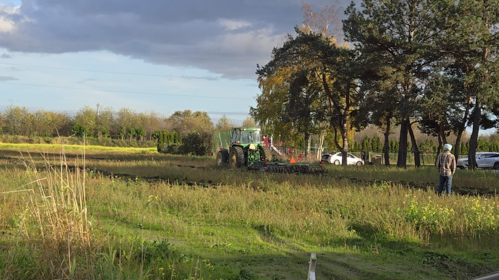
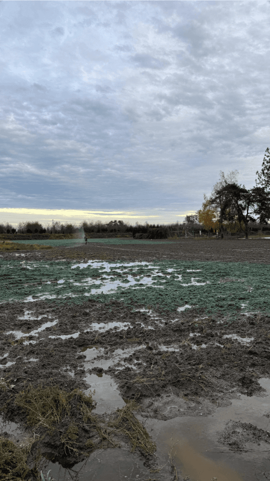

Trusted Agrology & Land‑Use Specialists in British Columbia
From regulatory applications to environmental assessments, we deliver full-service agrology solutions you can rely on.
|
 |
|

From regulatory applications to environmental assessments, we deliver full-service agrology solutions you can rely on.
Supporting farmers, landowners, and municipalities with ALR/ALC, municipal approvals, soil/fill compliance, and on-site delivery.
Practical, regulator-informed agrology support to keep projects feasible and compliant on agricultural land.
End-to-end preparation and coordination for ALC and municipal approvals — built to reduce delays and revisions.
Field-level delivery and oversight for soil/fill and agricultural land improvements — from sourcing to close-out.
Science-backed solutions, local expertise, and a commitment to sustainable land use.
10+ years of combined ALC and municipal experience equip us to navigate complexities efficiently.
Recommendations grounded in technical soil science and real site conditions — not generic templates.
We're there in the field — monitoring work, supporting compliance, and proactively solving issues.
We speak the language of landowners and regulators alike — bridging communication gaps to keep projects moving.
Most firms hand you a report and walk away. We handle the full cycle — assessments, permitting, construction, and compliance — so you have one team from start to finish.

Soil sampling, root-zone analysis, and stamped specifications for sports field construction.
Agricultural
ALC representation, agricultural rationale, and permitting coordination for parcel realignment.
Agricultural
Soil remediation oversight, closure reporting, and compliance sign-off with municipal officials.
RemediationTell us about your project — we’ll respond within one business day.
We assess your site and provide clear, actionable next steps.
From applications to construction, we manage the process through to completion.
Book a free consultation today — we’ll respond within one business day.
Contact Us